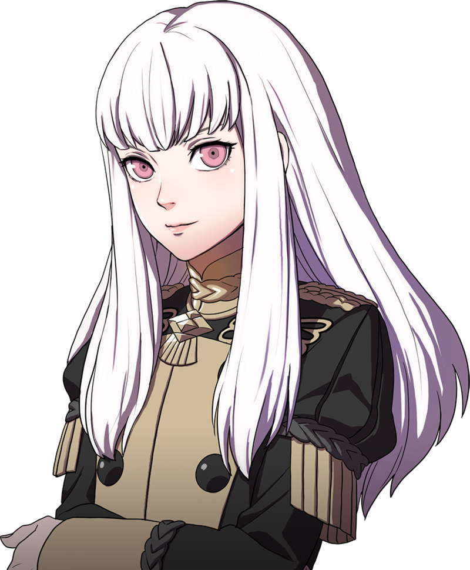

Claude von ReganClaude is the leader of the Golden Deer House, and he is the future leader of the alliance. He is also a scheamer. |
Lorenz Hellman GloucesterLorenz is a noble who strive to be a great noble, and he also desires to be the future leader of the alliance. |
Raphael KirstenRaphael is a commoner who comes from a family of merchants, and also loves to eat food. |
Ignatz VictorIgnatz is a commoner who comes from a merchant family, and he is a talented artist. |
Lysithea von OrdeliaLysithea is a genius prodigy, and is also notably much younger compared to most of the other students at the officers accademy. |
 |
Marianne von EdmundMarianne loves to tend to animals, but she is ussally gloomy. |
Hilda Valentin GonerilHilda loves to slack-off and make other people do her work. |
Leonie PinelliLeonie is a commoner from a poor village, and she hopes to become a great mercenary in the future. |